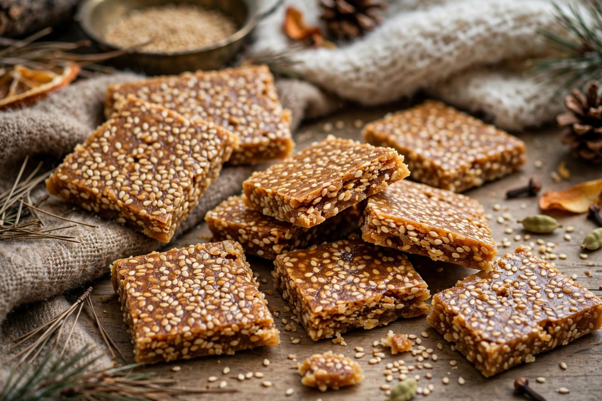
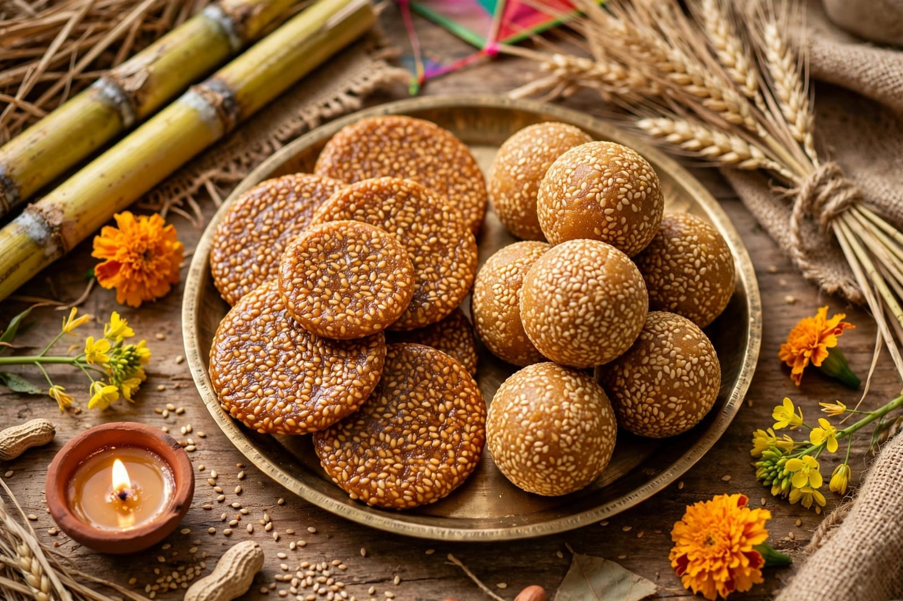
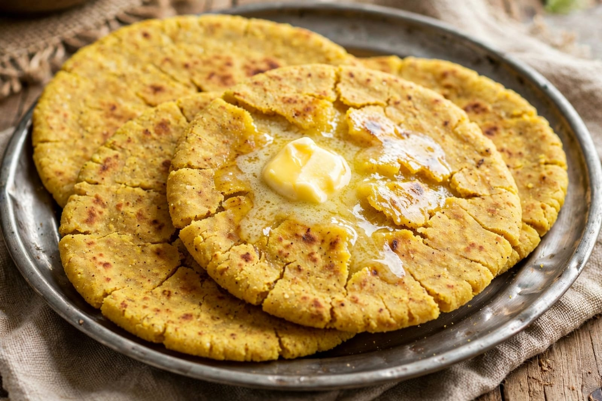

About Lohri
Lohri is a popular winter festival celebrated mainly in Punjab and parts of North India. It is traditionally associated with the winter harvest season. Lohri is celebrated with great joy and enthusiasm. The festival is usually celebrated on 13th January. It is associated with the end of the winter season and the longer days that follow. Lohri has a special importance for farming communities. Farmers celebrate the festival after the harvest of winter crops. The festival brings families and communities together. People gather around a bonfire during the evening. The bonfire is an important part of Lohri celebrations. People offer traditional items such as sesame seeds and popcorn to the fire. These offerings are associated with traditional customs. People sing folk songs around the bonfire. Traditional Punjabi dances are performed. Bhangra and Giddha are commonly associated with celebrations. People wear traditional clothes during the festival. Families prepare special food for the occasion. Sesame seeds are an important part of Lohri foods. Jaggery and peanuts are also commonly enjoyed. People share sweets and snacks with relatives and neighbours. Lohri creates a warm and joyful atmosphere during winter. Children often visit homes and collect traditional treats. Families spend time together during the celebration. Newly married couples may celebrate Lohri with their families. The first Lohri of a newborn child may also be celebrated specially. People exchange greetings and gifts. The festival has many regional customs. Different communities may celebrate Lohri in slightly different ways. Lohri reflects the agricultural traditions of Punjab. It is also a celebration of family and community. The festival is connected with folk traditions and music. People enjoy dancing and singing during the celebrations. Lohri is an important cultural festival of North India. It represents happiness, harvest and togetherness.
The Lohri bonfire is usually lit after sunset. People gather around the fire with family members and friends. Traditional songs are sung around the bonfire. People perform Bhangra and Giddha. The atmosphere becomes lively with music and dancing. Sesame seeds, peanuts and popcorn are commonly offered during the ceremony. These foods are also shared among the people attending the celebration. Lohri is especially important for farming communities. The festival is associated with the winter harvest. Farmers celebrate the season with happiness and gratitude. Sugarcane is an important crop associated with Lohri. Fresh sugarcane and sugarcane products may be enjoyed during the festival. People prepare traditional Punjabi dishes. Sarson da saag and makki di roti are popular Punjabi foods. Gajak and rewri are also commonly associated with Lohri. Peanuts and popcorn are popular snacks during the celebration. Til ladoos are made using sesame seeds and jaggery. Families prepare food and share it with guests. Lohri is a time for social gatherings. Relatives and friends visit each other. People exchange greetings and gifts. Children enjoy collecting sweets and snacks. Traditional folk music is an important part of the celebration. Bhangra performances create a festive atmosphere. Giddha is traditionally performed by women. Traditional Punjabi clothing is often worn. Colourful dresses add to the beauty of the celebration. Lohri helps preserve Punjabi folk traditions. The festival is celebrated in many communities outside Punjab as well. Punjabi communities in different parts of India celebrate Lohri. Lohri creates a strong feeling of community. It brings people together during the winter season. The festival is remembered for its bonfire, music, dance and food. Lohri is a joyful celebration of harvest and togetherness.
Lohri has special importance for families. Families often celebrate important occasions during Lohri. The first Lohri of a newly married couple may be celebrated specially. The first Lohri of a newborn child can also be an important family event. Relatives may gather together for these celebrations. Gifts and sweets are exchanged among family members. Traditional songs are sung during family gatherings. People pray for happiness and prosperity. The bonfire represents warmth during the winter season. People sit together around the fire and enjoy the evening. Lohri is also connected with traditional folk stories. One famous folk hero associated with Lohri is Dulla Bhatti. Folk songs about Dulla Bhatti are traditionally sung during Lohri. He is remembered in Punjabi folk tradition for helping people. Lohri celebrations may include cultural programs. Schools and communities may organize special events. Traditional dances and songs are performed. Food is an important part of the festival. Sesame seeds, jaggery and peanuts are widely used. These ingredients are especially popular during winter. Families share traditional sweets and snacks. Lohri reflects the rich cultural heritage of Punjab. It celebrates the harvest and the changing season. It promotes friendship and togetherness. People enjoy the festival with family and friends. Lohri is celebrated with happiness and enthusiasm. It is an important winter festival of India. The festival brings warmth and joy to communities. Lohri remains an important part of Punjabi culture.
Special Foods

Gajak
Gajak is a traditional sweet made with sesame seeds and jaggery.

Rewri
Rewri is a traditional sesame and jaggery sweet enjoyed during Lohri.

Makki di Roti
Makki di Roti is a traditional Punjabi corn flatbread.